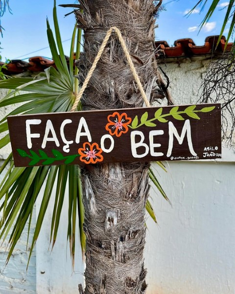
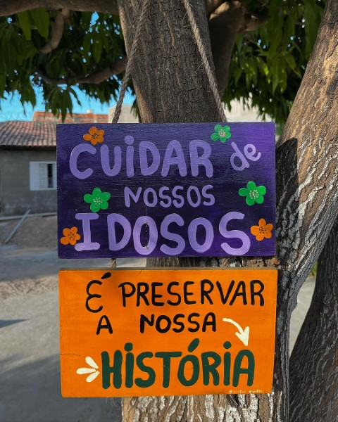
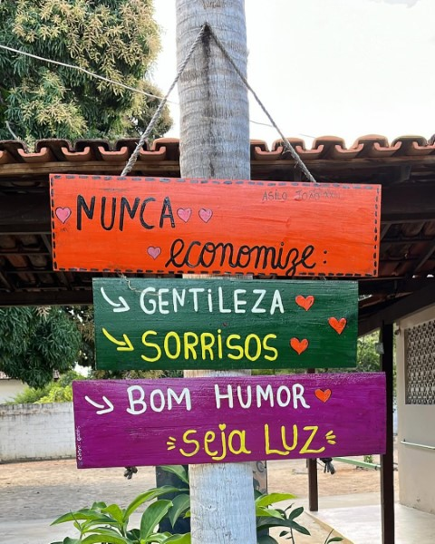
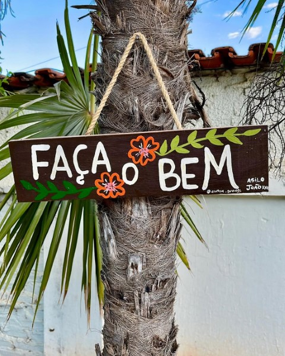
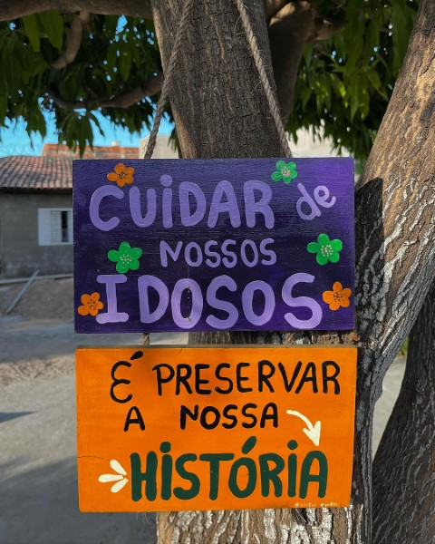
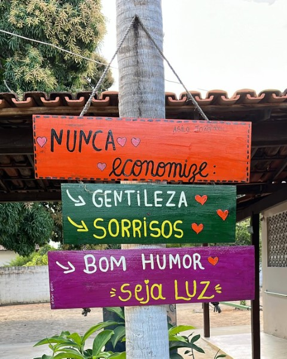

"Transforme solidariedade em ação: sua doação é um gesto de amor que muda vidas!"
Conheça o Asilo João XXIII
Instituição sem fins lucrativos localizada em Januaria (MG). O Asilo João XXIII luta para o atendimento e a promoção da qualidade de vida e o resgate à dignidade da pessoa idosa.
O Asilo São Vicente de Paulo – João XXIII, fundado em 23 de julho de 1967, está localizado em Januária-MG e é uma associação privada, filantrópica, sem fins lucrativos, voltada à assistência social. Funcionando como uma Instituição de Longa Permanência para Idosos (ILPI), a entidade oferece acolhimento gratuito a idosos em situação de vulnerabilidade ou risco social, especialmente quando esgotadas as possibilidades de sustento próprio ou convívio familiar. Sua missão é proporcionar proteção social de alta complexidade, oferecendo um ambiente acolhedor e atendimento planejado, de acordo com o Estatuto do Idoso e as políticas públicas de assistência social. A instituição acolhe pessoas com 60 anos ou mais, de ambos os sexos, que enfrentam condições como abandono, violência, negligência, ou vínculos familiares fragilizados, sempre priorizando a dignidade, longevidade e bem-estar dos residentes.
Saiba mais:
Visitas: Seg-Sexta das 14:30 as 16:30
Localização: Avenida Itapiracaba, 682. Bairro: Centro. CEP: 39480-000. Januaria-MG
Email: asilojanuaria@hotmail.com
Telefone: (38) 3621-4906
 




